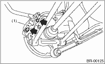

BRAKE > Rear Disc Brake Assembly
CAUTION:
Do not let brake fluid come into contact with the painted surface of the vehicle body. Completely wash away with water immediately and wipe off if it was accidental.
1. Set the vehicle on a lift.
2. Loosen the wheel nuts.
3. Lift up the vehicle, then remove the rear wheels.
4. Disconnect the brake hose from caliper body assembly.
5. Remove the bolt securing lock pin (Yellow) to caliper body assembly.

|
(1) |
Caliper body |
6. Raise the caliper body, and then move it toward vehicle center to separate it from the support.
7. Remove the support from housing.
NOTE:
Remove the support only when replacing the rotor or support. It need not be removed when servicing the caliper body assembly.
8. Remove mud and foreign matter from the caliper body assembly and the support.
CAUTION:
Be careful not to allow foreign matter to enter the brake hose connector.